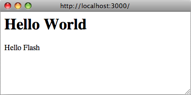
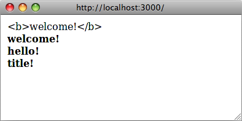

Ruby의 I18n 프레임워크에서는 Rails 애플리케이션의 국제화/지역화에 필요한 모든 방법을 제공하고 있습니다. 물론, 다양한 플러그인이나 확장기능을 사용해서 그 이외의 기능을 추가해도 좋습니다. 더 자세한 설명은 Ruby의 rails-i18n gem를 참조해주세요.
1 Ruby on Rails의 I18n이 동작하는 방법
국제화는 이래저래 복잡한 작업입니다. 자연언어에는 단수형/복수형같은 다양한 차이가 있으며, 모든 문제를 한번에 해결할 수 있는 마법같은 도구를 제공하는 것은 무척이나 어렵습니다. 이 때문에 Rails I18n API에서는 아래의 문제를 중점적으로 해결하려고 노력합니다.
- 기본적으로 영어 또는 그에 가까운 언어를 지원하기.
- 그 이외의 언어에 대해서 다른 요소를 변경 또는 확장 가능하도록 만들기.
문제해결의 일환으로 Rails 프레임워크의 모든 정적문자열 (Active Record의 유효성 검사시에 사용하는 메시지, 시각이나 날짜 형식 등)의 국제화 작업은 이미 완료되어 있습니다. 따라서 Rails 애플리케이션의 이러한 부분을 지역화하는 작업은 단순히 국제화 작업이 이미 완료된 문자열을 '덮어 쓰기만'하면 됩니다.
1.1 라이브러리의 구조
Ruby의 I18n gem은 2개의 부분으로 구성되어 있습니다.
- i18n 프레임워크의 공개 API - 라이브러리의 동작을 정의하는 공개 메소드를 가지는 Ruby 모듈
- 이 메소드를 구현하여 기본으로 들어가는 간단한 백엔드
I18n의 사용자는 I18n 모듈의 공개 메소드만 사용하게 됩니다만, 백엔드의 기능에 대해서 알아두는 것도 여러모로 편리합니다.
Rails 포함되어 있는 '간단한' 백엔드를 번역 사전을 관계형 데이터베이스에 저장하거나 GetText 사전 등에 관리하는 고성능의 백엔드로 교체할 수도 있습니다. 자세한 설명은 후술할 백엔드 교체하기를 참조해주세요.
1.2 공개 I18n API
I18n API에서 가장 중요한 메소드를 다음에서 설명합니다.
translate # 번역문을 참조 localize # Date 객체나 Time 객체를 로케일에 맞추어 변환
이 메소드에서는 각각 #t와 #l이라는 별명 메소드가 있으므로 아래와 같이 간결하게 작성할 수 있습니다.
I18n.t 'store.title' I18n.l Time.now
아래의 속성에 대해서는 읽기/쓰기 메소드도 지원합니다.
load_path # 번역 파일의 경로를 읽기/쓰기 locale # 현재 로케일을 읽기/쓰기 default_locale # 기본 로케일을 읽기/쓰기 exception_handler # 다른 exception_handler를 사용 backend # 다른 백엔드를 사용
다음 장에서는 '간단한' 방법으로 Rails 애플리케이션을 국제화해봅시다.
2 Rails 애플리케이션에서 국제화를 위한 준비하기
Rails 애플리케이션에서 I18n을 지원하기 전에 몇가지 해두어야할 것들이 있습니다.
2.1 I18n 모듈을 설정하기
Rails는 설정보다는 관습(CoC)의 철학에 따라서 충분히 의미있는 기본 설정값을 가지고 있습니다. 설정을 변경하고 싶은 경우에는 간단하게 덮어쓸 수 있습니다.
config/locales에 있는 모든 .rb 파일과 .yml 파일은 자동적으로 번역 파일 경로에 추가됩니다.
위의 폴더에 있는 기본 en.yml 파일에는 원문/역문 쌍이 포함됩니다.
en: hello: "Hello world"
이 예제에서는 ':en이라는 로케일에서 hello라는 키는 Hello world라는 문자열과 대응됨'이라는 의미입니다. Rails 내부의 문자열은 모두 이런 모습으로 국제화 작업이 되어있습니다. 구체적인 예시에 대해서는 Active Model의 유효성 검사 메시지 목록(activemodel/lib/active_model/locale/en.yml 파일)이나 시각/날짜 형식 목록 (activesupport/lib/active_support/locale/en.yml 파일)을 참조해주세요. 기본으로 사용하는 백엔드에서는 번역을 YAML이나 표준 Ruby 해시를 이용해서 저장합니다.
I18n 라이브러리에서는 English를 기본 로케일로 취급합니다. 기본 로케일을 다른 언어로 지정하지 않았을 경우에는 번역에 사용할 문장 검색시에 :en이 사용됩니다.
몇몇 논의의 결과, Rails의 I18n 라이브러리에서는 로케일 키 관리에 실용적인 방법을 채용하고 있습니다. 다시 말해 :en이나 :pl같은 로케일(="언어") 부분만을 키로 채용했습니다. :en-US나 :en-GB처럼 언어와 지역(또는 방언)을 분리한 표기법은 로케일 키로서 채용하지 않습니다. 실제로 국제화된 애플리케이션의 대부분은 :cs, :th, :es(각각 체코어, 태국어, 스페인어)와 같은 언어 부분만을 로케일 표기로서 채용하고 있습니다. 하지만 같은 언어 그룹에 속해 있더라도 지역에 따른 상이점이 중요한 경우도 존재합니다. 단적인 예시로 :en-US의 통화 기호는 $(달러)입니다만, :en-GB 의 통화 기호는 £(파운드)입니다. 이러한 지역마다의 차이를 별도로 분리하는 것도 가능합니다. 이 경우 "English - United Kingdom"이라는 로케일을 :en-GB 사전에 추가하면 됩니다. Rails에는 Globalize3등의 여러 Rails I18n 플러그인이 있으니 구현시에 도움이 될 겁니다.
번역문의 위치 경로 (I18n.load_path)는 단순히 번역문을 가지고 있는 파일의 경로 정보를 Ruby의 배열로 가지고 있을 뿐으로, 여기에서 지정된 번역문은 애플리케이션이 자동으로 로딩하여 사용할 수 있게 됩니다. 지정한 디렉토리나 파일명의 명명 방식은 알기 쉬운 방식을 자유롭게 사용하면 됩니다.
I18의 백엔드는 번역문을 사용할 때가 되어야 해당 파일들을 읽어드립니다. 이에 따라서 번역문이 이미 공개된 이후에도 백엔드를 다른 것으로 바꿀 수 있습니다.
또한 config/application.rb 파일을 통해서 기본 로케일ㄹ을 변경하여 불러올 번역을 설정할 수 있습니다.
config.i18n.load_path += Dir[Rails.root.join('my', 'locales', '*.{rb,yml}').to_s]
config.i18n.default_locale = :de
2.2 옵션: I18n 설정을 변경하기
완벽을 기하고 싶다면 application.rb 파일을 사용하고 싶지 않은 경우에는 직접 설정을 할 수도 있습니다.
번역 파일의 경로를 I18n 라이브러리에게 알려주기 위해서는, 애플리케이션에 읽을 경로를 지정해야 합니다. 이는 애플리케이션의 어디든 관계가 없습니다만, 번역문 사용이 발생하기전에 읽어질 필요가 있습니다. 기본으로 사용할 로케일도 변경 가능합니다. 가장 간단한 방법은 initializer에 이 정보들을 넣어두는 것입니다.
# config/initializers/locale.rb 파일의 내용:
# I18n 라이브러리에 번역문을 저장해둔 장소를 알려준다.
I18n.load_path += Dir[Rails.root.join('lib', 'locale', '*.{rb,yml}')]
# 기본 로케일을 :pt로 설정한다.
I18n.default_locale = :pt
2.3 로케일을 설정하고 넘기기
Rails 애플리케이션을 기본 로케일인 영어 이외의 언어로 설정하고 싶은 경우에는 application.rb 파일 또는 위에서 소개한 initializer에서 I18n.default_locale을 지정합니다. 여기서 지정한 로케일은 모든 요청에 적용됩니다.
하지만 하나의 애플리케이션에서 2개 이상의 로케일을 지원하고 싶은 경우도 분명 존재할 것입니다. 그러한 경우에는 요청과 요청간에서 로케일을 지정하고 넘겨줄 필요가 있습니다.
이 가이드를 읽고 있는 대부분의 분들은 로케일을 세션이나 cookie에 저장하는 방법을 생각하고 계실겁니다. 하지만 그렇게 사용하지 말아주세요. 로케일은 세션이나 쿠키에 의존하지 않는 명백한 방법을 써야하며, URL의 일부로 구성되어야 합니다. Web을 사용하는 사용자들은 Web에 대해사 다양한 것들을 전제하고 있기 때문에 그것을 거슬러서는 안됩니다. 예를 들어, 당신이 어떤 URL을 지인에게 전송한 뒤, 지인이 그 URL에 접속했을때 당신이 보고 있는 페이지와 완전히 동일한 페이지, 동일한 내용이어야 합니다. 다르게 말하자면, 애플리케이션을 RESTful하게 만들어야 합니다.
설정은 간단합니다. 아래와 같은 방법으로 ApplicationController의 before_action에서 로케일을 설정하면 됩니다.
before_action :set_locale def set_locale I18n.locale = params[:locale] || I18n.default_locale end
이 설정을 마친 후에 로케일을 URL 쿼리 파라미터의 일부로서 http://example.com/books?locale=pt와 같은 형식으로 넘겨줄 필요가 있습니다(이것은 Google 등이 사용하고 있는 접근방식입니다). 말하자면, http://localhost:3000?locale=pt로 접근하면 포르투갈어로 로케일을 사용하며 http://localhost:3000?locale=de로 접근하면 독일어 로케일을 사용하는 식입니다. 로케일 정보를 수동으로 URL에 배치해서 페이지를 다시 읽고 싶은 경우에는 뒤쪽의 애플리케이션을 국제화하기 절을 먼저 읽으셔도 좋습니다.
물론 대부분의 개발자는 애플리케이션 전체에서 일일히 로케일을 URL로 지정하고 싶어하지 않을것이므로 URL 형식을 다른 방식으로 사용하고 싶다고 생각할 수도 있을 것입니다(예를 들어, http://example.com/pt/books나 http://example.com/books/en 같은 방식이 있습니다). 그 이외에도 어떤 방법이 있는지 확인해봅시다.
2.4 도메인 명으로 로케일을 설정하기
다른 방법중의 하나로 애플리케이션이 실행되고 있는 도메인 명을 이용해서 로케일을 설정할 수도 있습니다. 예를 들어 www.example.com에 접근한 경우에는 기본 로케일인 영어를 사용하고, www.example.es에 접근한 경우에는 스페인 어를 사용하는 식입니다. 따라서, 여기에서는 최상이 도메인 이름을 사용하여 로케일을 설정하겠습니다. 이 방법에 대해서는 아래와 같은 이점이 있습니다.
- 로케일이 URL의 일부로 명확히 나타난다.
- 사용자가 그 웹 페이지가 어떤 언어로 출력되고 있는지 이해하기 쉽다.
- Rails에서 구현하기도 비교적 쉽다.
- 검색 엔진은 이러한 도메인 별로 다른 언어의 컨텐츠를 제공할 수 있고, 나아가 같은 도메인끼리 내부 링크로 연결되어 있는 경우 검색 결과 순위도 유리할 수 있습니다.
이렇게 설정하기 위해서는 ApplicationController에서 다음과 같이 구현하면 됩니다.
before_action :set_locale
def set_locale
I18n.locale = extract_locale_from_tld || I18n.default_locale
end
# 최상위 도메인으로 부터 로케일을 가져온다. 없으면 nil을 반환
# 이 동작을 로컬에서 테스트하기 위해서는,
# 127.0.0.1 application.com
# 127.0.0.1 application.it
# 127.0.0.1 application.pl
# /etc/hosts 에 위의 내용을 추가해야 합니다.
def extract_locale_from_tld
parsed_locale = request.host.split('.').last
I18n.available_locales.map(&:to_s).include?(parsed_locale) ? parsed_locale : nil
end
거의 동일한 방법으로 서브 도메인을 사용한 로케일 설정도 가능합니다.
# 요청의 서브도메인으로 부터 로케일을 꺼내온다(http://it.application.local:3000와 같은 형태) # 이 동작을 로컬에서 테스트하기 위해서는, # 127.0.0.1 gr.application.local # /etc/hosts 에 위의 내용을 추가해야 합니다. def extract_locale_from_subdomain parsed_locale = request.subdomains.first I18n.available_locales.map(&:to_s).include?(parsed_locale) ? parsed_locale : nil end
애플리케이션에 로케일을 바꾸기 위한 메뉴를 추가할 때에는 다음과 같은 코드를 작성하면 됩니다.
link_to("Deutsch", "#{APP_CONFIG[:deutsch_website_url]}#{request.env['REQUEST_URI']}")
여기에서는 APP_CONFIG[:deutsch_website_url] 부분에 http://www.application.de와 같은 값이 설정되어 있다고 가정합니다.
도메인 이름으로부터 로케일을 가져오는 방법은 위에서 말했던 장점이 있습니다만, 도메인 이름이 바뀔 때에 지역화된 내용까지 바꾸어서는 안된다, 또는 바꾸고 싶지 않은 상황이 있을 수도 있습니다. 그러한 경우에 가장 좋은 해결책은 URL params나 요청 경로에 로케일 코드를 포함하는 것입니다.
2.5 URL Params으로 로케일을 설정하기
가장 일반적인 로케일을 설정하는 방법은 이미 첫번째 예시에서 사용했던 I18n.locale = params[:locale] before_action 을 사용한 것과 마찬가지로, 로케일을 URL params에 포함시키는 것입니다. 이 경우 www.example.com/books?locale=ja나 www.example.com/ja/books 같은 URL을 사용할 수 있습니다.
이 접근 방식은 도메인 이름으로부터 로케일을 취득하는 것과 거의 동일한 이점을 얻을 수 있습니다. 이에 의해서 애플리케이션은 World Wide Web 상에서 RESTful함을 유지할 수 있기 때문입니다. 단, 구현시에 추가로 해야할 작업이 생깁니다.
params로부터 로케일을 꺼내서 설정하는 것은 의외로 간단합니다. 로케일을 모두 URL에 포함하여 요청을 통해 건네기만 하면 됩니다. 단, 예를 들어 link_to(books_url(locale: I18n.locale))와 같은 형식으로 모든 URL에 로케일 정보를 직접 추가하는 것은 무척 귀찮으며, 실용적이지도 않습니다.
Rails에는 이러한 경우를 위해서 ApplicationController#default_url_options에 'URL을 동적으로 결정하는 방법을 중앙에서 제어하기'위한 구조가 준비되어 있습니다. 이를 통해서 url_for나, 그에 의존하는 헬퍼 메소드들의 "기본값"을 설정할 수 있습니다(이 경우, default_url_options를 구현하여 재정의할 필요가 있습니다).
ApplicationController에 동일한 설정을 포함할 수도 있습니다.
# app/controllers/application_controller.rb
def default_url_options(options = {})
{ locale: I18n.locale }.merge options
end
이와 같은 방식으로, url_for에 의존하는 모든 헬퍼 메소드(root_path나 root_url 같은 이름있는 메소드나 books_path나 books_url 같은 Resourceful한 라우팅 헬퍼)에서는 자동적으로 로케일 정보를 쿼리 문자열에 포함하게 됩니다. 예를 들어 http://localhost:3001/?locale=ja와 같은 형태가 됩니다.
대부분의 경우, 이것만으로 작업은 충분합니다. 이에 의해서 URL이 읽기 힘들어지는 경우는 많지 않습니다만, URL의 마지막에 항상 로케일 정보가 포함되어 있는 것은 역시 보기에 좋지 않습니다. 나아가 애플리케이션의 설계 관점에서 보자면 로케일은 애플리케이션 도메인의 어떤 부분보다도 상위에 위치하는 것이므로 로케일 정보는 URL의 상위에 위치시켜야 하는 것은 아닌가, 라는 관점도 있습니다.
그런 경우에는 URL을 www.example.com/en/books(영어)나 www.example.com/nl/books (네덜란드어)와 같은 구조로 만들고 싶을 것입니다. 이것은 위에서 언급한 "default_url_options의 설정을 재정의"하는 방법으로 구현할 수 있습니다. 단, 아래와 같이 라우팅에서 scoping을 사용할 필요가 있습니다.
# config/routes.rb scope "/:locale" do resources :books end
이를 통해서 books_path 메소드를 호출하면 기본 로케일이 "/en/books" 처럼 URL에 포함됩니다. http://localhost:3001/nl/books와 같은 URL의 경우에는 네덜란드 어 번역 사전을 읽어오며 그 경우 books_path를 호출하면 로케일이 반영된 "/nl/books"가 반환됩니다.
라우팅에서 로케일의 사용을 강제하고 싶지 않은 경우에는 아래와 같이 소괄호로 로케일을 옵션 경로으로 만들면 됩니다.
# config/routes.rb scope "(:locale)", locale: /en|nl/ do resources :books end
위에서 보듯, 로케일을 필수로 사용하지 않는 것으로 http://localhost:3001/books처럼 로케일을 포함하지 않는 URL을 사용하더라도 Routing Error를 발생시키지 않게 됩니다. 이것은 로케일을 지정하지 않을 경우, 기본 로케일을 사용하도록 하고 싶을 경우에 유용합니다.
단, 위의 방법을 사용하는 경우, 애플리케이션 홈페이지나 대시보드가 설치된, 이른바 'Root URL'에 대해서는 특별히 주의해야합니다. 예를 들어 http://localhost:3001/nl와 같은 URL은 동작하지 않습니다. 이것은 routes.rb에 있는 root to: "books#index" 선언에는 로케일이 고려되지 않기 때문입니다(그리고 원칙적으로 "root" URL은 하나의 애플리케이션에서 하나만 지정할 수 있기 때문입니다).
이 문제를 회피하기 위해서는 다음과 같이 URL을 매칭시켜야할 필요가 있습니다.
# config/routes.rb get '/:locale' => 'dashboard#index'
이 라우팅 선언이 다른 라우팅을 '매칭해버리는' 경우가 발생하지 않도록 라우팅 선언의 순서에는 세심의 주의를 기울여주세요(이 선언을 root :to의 앞에 위치시킬수도 있습니다).
라우팅에 대해서 이러한 방식으로 간단하게 동작하는 아래 2개의 플러그인을 고려해보아도 괜찮습니다. Sven Fuchs씨의 routing_filter와 Raul Murciano의 translate_routes등이 있습니다.
2.6 클라이언트에서 제공하는 정보로 로케일을 설정하기
상황에 따라서는 URL이 아닌 클라이언트가 전송하는 정보를 가지고 로케일을 설정하고 싶을 경우도 있을 것입니다. 클라이언트에서 전송되는 정보로는 브라우저에 설정되어 있는 최우선 언어 설정, IP로부터 추측되는 지리 정보 이외에도, 사용자가 애플리케이션의 화면에서 로케일을 선택하여 프로파일에 저장해 둔 것도 있을 것입니다. 이 방법은 웹사이트보다도 웹 기반 애플리케이션이나 서비스에 유용합니다. 위에서 언급했던 세션, cookie, RESTful 구조에 관한 설명을 참조해주세요.
2.6.1 Accept-Language를 사용하기
클라이언트로부터 전송받은 정보중 하나로 Accept-Language HTTP 헤더가 있습니다. 이 정보는 브라우저에서 설정되는 경우가 일반적입니다만, curl등의 브라우저 이외의 클라이언트에서도 사용할 수 있습니다.
Accept-Language 헤더를 사용한 구현은 다음과 같은 방식으로 가능할 것입니다.
def set_locale
logger.debug "* Accept-Language: #{request.env['HTTP_ACCEPT_LANGUAGE']}"
I18n.locale = extract_locale_from_accept_language_header
logger.debug "* Locale set to '#{I18n.locale}'"
end
private
def extract_locale_from_accept_language_header
request.env['HTTP_ACCEPT_LANGUAGE'].scan(/^[a-z]\{2\}/).first
end
말할 필요도 없습니다만, production 환경에서는 좀 더 제대로 된 코드를 사용해야 합니다. Iain Hecker씨의 http_accept_language의 플러그인이나, Rack 미들웨어인 Ryan Tomayko씨의 locale 등을 사용해도 좋습니다.
2.6.2 GeoIP 등의 지리 정보를 사용하기
클라이언트로부터 전송된 정보에서 로케일을 얻는 방법 중의 하나로, 클라이언트의 IP 주소로부터 지역 정보를 가져오는 데이터베이스를 사용하는 것도 있습니다. GeoIP Lite Country등이 대표적입니다. 이 코드의 구조는 위에서 보였던 코드의 구조와 무척 유사합니다. 사용자의 IP 주소를 그 데이터베이스에 질의하고, 나라, 지역, 도시 정보에 따른 적당한 로케일을 선택하면 됩니다.
2.6.3 사용자 프로파일
애플리케이션의 로케일 설정(그리고 재정의)하기 위한 방법을 사용자에게 제공할 수도 있습니다. 그를 위한 코드는 지금까지의 방법과 기본적으로 다르지 않습니다. 목록 형태로 로케일을 보여주고, 사용자가 그것을 이용해 로케일을 선택하면 이를 데이터베이스에 보존합니다. 그리고 그 로케일 값을 애플리케이션의 로케일로 설정하면 됩니다.
3 애플리 케이션을 국제화하기
수고하셨습니다. 이상으로 Ruby on Rails 애플리케이션에서의 I18n 적용을 위한 작업이 완료되었습니다. 사용할 로케일을 설정하고, 요청간에 로케일 정보를 유지하기 위한 방법도 선택했습니다. 드디어 지금부터가 본격적인 작업이 되겠습니다.
그러면 애플리케이션의 국제화(로케일 고유의 부분을 추상화 하기 위한 작업 등)를 하고, 이어서 지역화(추상화된 부분에 번역을 추가하기)를 해봅시다.
애플리케이션에는 아래와 같은 코드가 있다고 가정합시다.
# config/routes.rb Rails.application.routes.draw do root to: "home#index" end
# app/controllers/application_controller.rb
class ApplicationController < ActionController::Base
before_action :set_locale
def set_locale
I18n.locale = params[:locale] || I18n.default_locale
end
end
# app/controllers/home_controller.rb
class HomeController < ApplicationController
def index
flash[:notice] = "Hello Flash"
end
end
# app/views/home/index.html.erb <h1>Hello World</h1> <p><%= flash[:notice] %></p>

3.1 번역을 추가하기
이 코드에서는 영어로 지역화된 문자열이 2개있습니다. 이 코드를 국제화하기 위해서는 Rails의 #t 헬퍼를 사용해서 이 영어 문자열을 치환합니다. 이 헬퍼에 넘길 키는 번역문의 의미를 한눈에 알 수 있는 것으로 사용하세요.
# app/controllers/home_controller.rb
class HomeController < ApplicationController
def index
flash[:notice] = t(:hello_flash)
end
end
# app/views/home/index.html.erb <h1><%=t :hello_world %></h1> <p><%= flash[:notice] %></p>
이 단계에서 뷰를 랜더링하면, :hello_world와 :hello_flash를 키로 가지는 번역문을 찾을 수 없다는 에러 메시지가 발생합니다.

Rails는 t(translate) 헬퍼 메소드를 자동적으로 뷰에 추가해주므로, I18n.t를 직접 사용할 필요가 없습니다. 나아가, 이 헬퍼는 번역문이 발견되지 않을 경우에는 에러 메시지를 <span class="translation_missing">으로 감싸서 보여줍니다.
이어서 사전 파일에 번역을 추가해봅시다.
# config/locales/en.yml en: hello_world: Hello world! hello_flash: Hello flash! # config/locales/pirate.yml pirate: hello_world: Ahoy World hello_flash: Ahoy Flash
이러한 느낌으로 만들어 봤습니다. defailt_locale이 변경되지 않았으므로 I18n은 기본값인 영어를 사용합니다. 애플리케이션은 다음과 같이 보이게 됩니다.

URL을 변경해서, 해적어를 로케일로 넘기면(http://localhost:3000?locale=pirate), 다음과 같이 보입니다.

로케일 파일을 갱신했을 경우에는 서버를 다시 실행해야 할 필요가 있습니다.
번역문을 SimpleStore에 저장했을 경우 YAML(.yml) 파일 또는 Ruby(.rb) 파일중 하나를 찾습니다. YAML은 많은 Rails 개발자들이 즐겨 쓰는 형식입니다. 단 YAML에는 한가지 큰 문제가 있습니다. YAML은 공백이나 특수문자에 의한 영향을 받기 쉽기 때문에 애플리케이션이 사전을 올바르게 읽어오지 못하는 경우가 있습니다. Ruby 파일 형식을 선택한 경우 문제가 있다면 첫 요청의 시점에서 애플리케이션이 에러를 발생시키므로 문제를 발견하기 쉽다는 장점이 있습니다(YAML 사전을 사용하고 있을때 '원인불명의 기묘한 문제'가 발생한 경우에는 그 부분을 Ruby 파일로 변환해보면 문제가 해결될 수도 있습니다).
3.2 번역문에 변수를 넘기기
번역 메시지에 변수를 포함해서 뷰로부터 변수의 값을 넘길 수도 있습니다.
# app/views/home/index.html.erb <%=t 'greet_username', user: "Bill", message: "Goodbye" %>
# config/locales/en.yml
en:
greet_username: "%{message}, %{user}!"
3.3 날짜, 시각 형식을 추가하기
수고하셨습니다. 이번에는 뷰에 타임스탬프를 추가하고, 날짜, 시각 지역화 기능을 추가해봅시다. 시각 포맷을 지역화 하기 위해서는 I18n.l에 Time 객체를 넘기거나 Rails의 #l 헬퍼를 사용합니다(후자를 권장합니다). :format 옵션을 넘겨서 포맷을 선택할 수 있습니다. 기본 값은 :default 포맷입니다.
# app/views/home/index.html.erb <h1><%=t :hello_world %></h1> <p><%= flash[:notice] %></p> <p><%= l Time.now, format: :short %></p>
그러면 해적어의 번역 파일에 시간 포맷을 추가해봅시다(이미 기본 로케일인 영어에서 해적어로 전환한 상태라고 가정합시다).
# config/locales/pirate.yml
pirate:
time:
formats:
short: "arrrround %H'ish"
출력 결과는 다음과 같습니다.

현시점에서 I18n 백엔드가 (적어도 해적어 로케일)에서 정상적으로 동작하게 만들려면 날짜, 시간 포맷을 추가할 필요가 있습니다. 물론, 어떤 친절한 사람이 Rails의 기본 문자열을 모두 번역해둔 결과가 인터넷의 어딘가에 있을지도 모릅니다. 로케일 파일의 아카이브가 있는지 없는지, Github의rails-i18n 저장소를 찾아보면 좋을 것입니다. 운 좋게 필요한 파일을 발견하게 되면, config/locales/ 폴더에 넣어서 곧장 사용할 수 있습니다.
3.4 활용형 규칙을 추가하기
Rails 4.0에서는 영어 이외의 언어에 대해서도 단수형/복수형과 같은 활용형을 정의할 수 있습니다. config/initializers/inflections.rb에서는 여러 언어를 대상으로 활용형 규칙을 선언할 수 있습니다. 이 initializer에서는 영어의 활용형을 추가하는 예제가 포함되어 있습니다. 다른 언어에서도 같은 요령으로 활용형 규칙을 추가할 수 있습니다.
3.5 지역화된 뷰 템플릿
Rails 2.3에서는 '지역화된 뷰(템플릿)'이라는 편리한 기능이 추가되었습니다. 애플리케이션에 BooksController라는 컨트롤러가 있다고 가정합시다. 이 컨트롤러의 index액션이 실행되면 app/views/books/index.html.erb 템플릿이 실행됩니다. 같은 폴더에 이 템플릿의 스페인어 지역화 버전의 index.es.html.erb를 저장해두면, 로케일이 :es인 경우에 그 템플릿을 사용합니다(앞으로 Rails에서는 public 폴더 등에 위치한 애셋을 자동적으로 지역화하는 기능이 추가될 지도 모릅니다).
뷰에 대량의 문장이 포함되어 있는 경우 이 문장들을 분해해서 YAML 사전이나 Ruby 사전에 번역문을 저장하는 것은 귀찮을 뿐 아니라 번역문이 매끄럽게 보이지 않을 가능성이 있습니다. 이러한 경우에는 로케일마다 뷰 전체를 바꾸는 방법을 사용하는 것도 좋습니다. 단 뷰 내에서 반복되는 번역의 일부를 나중에 변경한 경우, 다른 로케일의 뷰에서도 직접 손으로 변경해주어야 할 필요가 있다는 점을 잊지 말아주세요.
3.6 로케일 파일을 구성하기
I18n 라이브러리에서 기본으로 포함되는 SimpleStore를 사용하는 경우 사전은 평문 텍스트 파일로 저장됩니다. 애플리케이션에서 사용되는 모든 번역문을 로케일마다 하나의 파일에 저장하면 크기가 커졌을 경우에 관리가 곤란해질 가능성이 있습니다. 이를 위해서 사전 파일을 계층화하여 알기 쉽게 저장할 수 있도록 되어 있습니다.
예를 들어 config/locales 폴더는 아래와 같이 구성할 수 있습니다.
|-defaults |---es.rb |---en.rb |-models |---book |-----es.rb |-----en.rb |-views |---defaults |-----es.rb |-----en.rb |---books |-----es.rb |-----en.rb |---users |-----es.rb |-----en.rb |---navigation |-----es.rb |-----en.rb
이런 식으로 모델명과 모델 속성명을 뷰 내부의 텍스트로부터 분리하고, 날짜, 시각 형식등의 모든 것을 기본 파일로부터 분리시킬 수 있습니다. I18n 라이브러리를 위한 다른 저장소에서는 다른 방법을 통해 분리하는 경우도 있습니다.
Rails의 기본 사전 읽기 방식에서는 여기서 사용한 중첩된 사전에 포함된 파일을 읽을 수 없습니다. 따라서, 이것들을 읽어들일 수 있도록 아래와 같이 Rails에게 명시적으로 지시할 필요가 있습니다.
# config/application.rb
config.i18n.load_path += Dir[Rails.root.join('config', 'locales', '**', '*.{rb,yml}')]
4 I18n API 기능의 개요
여기까지 I18n 라이브러리에 대한 이해도가 어느정도 진척되었을 거라고 생각합니다. 기본적인 Rails 애플리케이션의 국제화에서 필요한 요소들에 대해서 대부분 배웠을 것입니다. 이 다음부터는 각 기능에 대해서 자세히 설명하겠습니다.
여기부터는 I18n.translate 메소드와 translate 뷰 헬퍼 메소드의 예를 통해 설명합니다(이 뷰 헬퍼 메소드가 제공하는 추가 기능에 대해서도 이야기합니다).
다음의 기능에 대해서 설명합니다.
- 번역문 참조
- 데이터를 번역문으로 보간(interpolate)하기
- 번역문의 복수형 처리
- 안전한 HTML 변환(뷰 헬퍼 메소드의 경우)
- 날짜, 숫자, 통화 등의 지역화
4.1 번역문 참조
4.1.1 기본적인 참조, 스코프, 중첩된 키
번역문은 심볼 또는 문자열 어느 것이든 키의 참조로서 사용할 수 있습니다. 따라서 아래의 두 호출은 동일한 결과를 돌려줍니다.
I18n.t :message I18n.t 'message'
translate 메소드는 :scope 옵션을 사용할 수 있습니다. 이 옵션은 '네임스페이스'를 지정하기 위한 추가 키를 더 받거나, 번역문 키의 스코프를 포함할 수 있습니다.
I18n.t :record_invalid, scope: [:activerecord, :errors, :messages]
이 코드에서는 Active Record 에러 메시지의 :record_invalid 메시지를 참조합니다.
나아가서 키와 스코프에는 마침표로 구분한 키를 사용할 수도 있습니다.
I18n.translate "activerecord.errors.messages.record_invalid"
따라서 아래의 모든 호출은 모두 같은 결과를 돌려줍니다.
I18n.t 'activerecord.errors.messages.record_invalid' I18n.t 'errors.messages.record_invalid', scope: :active_record I18n.t :record_invalid, scope: 'activerecord.errors.messages' I18n.t :record_invalid, scope: [:activerecord, :errors, :messages]
4.1.2 :default
:default 옵션을 주면 번역을 발견하지 못한 경우에 사용할 값을 지정할 수 있습니다.
I18n.t :missing, default: 'Not here' # => 'Not here'
:default 옵션에 주어진 값이 심볼인 경우, 키로 사용되어 번역문으로 변환됩니다. 복수의 값을 기본값으로 지정할 수 있습니다. 기본값이 여러개인 경우, 첫번째로 발견된 값을 사용하게 됩니다.
예: 아래에서는 첫번째 :missing이라는 키를 번역문으로 변환하려고 시도하고, 이어서 :also_missing이라는 키를 변환하려고 시도합니다. 여기에서는 어느쪽도 결과를 얻을 수 없으므로, 최종적으로는 'Not here'라는 문자열이 반환됩니다.
I18n.t :missing, default: [:also_missing, 'Not here'] # => 'Not here'
4.1.3 전체 참조와 네임스페이스 참조
키의 배열을 넘겨서, 다수의 번역을 한번에 참조할 수 있습니다.
I18n.t [:odd, :even], scope: 'errors.messages' # => ["must be odd", "must be even"]
키는 그룹화된 번역문의 해시로 번역할 수 있습니다. 이 해시는 중첩될 가능성이 존재합니다. 예를 들어 아래의 코드에서는 모든 Active Record 에러 메시지를 해시로 넘겨받게 됩니다.
I18n.t 'activerecord.errors.messages'
# => {:inclusion=>"is not included in the list", :exclusion=> ... }
4.1.4 지연 참조(lazy lookup)
Rails에는 뷰 내부에 로케일을 참조하기 위한 편리한 방법을 가지고 있습니다. 아래와 같은 사전이 있다고 해봅시다.
es:
books:
index:
title: "Título"
다음과 같이 app/views/books/index.html.erb 뷰 템플릿 내부에서 books.index.title값을 접근할 수 있습니다. 마침표가 첫 글자로 사용되고 있다는 점을 주목해주세요.
<%= t '.title' %>
파셜에 의한 자동번역 스코프는 translate 뷰 헬퍼 메소드에서만 사용할 수 있습니다.
4.2 식 전개
번역문을 추상화 할 때에, 변수를 번역문 내에서 보간(interpolate)해야할 때가 있습니다. 이를 위해서 I18n API에는 보간 기능을 지원합니다.
:default와 :scope를 제외하고 #translate에 넘겨지는 모든 옵션은 번역문에서 보간에 사용됩니다.
I18n.backend.store_translations :en, thanks: 'Thanks %{name}!'
I18n.translate :thanks, name: 'Jeremy'
# => 'Thanks Jeremy!'
식 전개에 사용되는 변수로서 :default나 :scope가 번역문에 사용되면 I18n::ReservedInterpolationKey 예외가 발생합니다. 번역문에서 해당 변수가 요구되고 있음에도 불구하고 #translate에 값이 넘어오지 않았을 경우에는 I18n::MissingInterpolationArgument 예외가 발생합니다.
4.3 복수형 만들기=
영어의 경우, 어떤 명사에는 단수형이 하나, 복수영도 하나인 경우가 있습니다(예시: "1 message"와 "2 messages"). 그 이외의 언어(아라비아어, 일본어, 러시아어 등)에서는 문법이 완전히 달라서 복수형의 숫자는 영어보다 많은 것도 있으며, 적은 것도 있습니다. 이에 대응하기 위해서 I18n API에서도 유연성이 높은 복수형 처리 기능을 가지고 있습니다.
:count라는 식 전개 변수에는 특수한 역할이 부여되어 있으며, 일반 번역문에서의 식 전개에서 쓰이는 것 이외에도 CLDR에서 정의된 복수형 규칙에 따라 적절한 복수형을 선택할 때에도 사용됩니다.
I18n.backend.store_translations :en, inbox: {
one: 'one message',
other: '%{count} messages'
}
I18n.translate :inbox, count: 2
# => '2 messages'
I18n.translate :inbox, count: 1
# => 'one message'
로케일이 :en인 경우의 복수형 규칙은 간단합니다.
entry[count == 1 ? 0 : 1]
다시 말해, 여기에서는 :one으로 표기되어 있는 번역어를 단수형으로 처리하고, 그 이외의 경우를 모두 복수형으로 취급합니다(0도 복수형으로 처리됩니다).
이 키로 번역문을 참조할 경우에 적절한 복수형을 가지는 해시가 돌아오지 않았을 경우 18n::InvalidPluralizationData 예외가 발생합니다.
4.4 로케일을 지정하고 넘기기
로케일은 I18n.locale(이는 Thread.current를 사용하며 Time.zone과도 비슷합니다)에 지정하거나, #translate 또는 #localize의 옵션으로 넘길 수 있습니다.
로케일이 지정되지 않았을 경우에는 I18n.locale을 사용합니다.
I18n.locale = :de I18n.t :foo I18n.l Time.now
다음처럼 로케일을 명시적으로 넘길수도 있습니다.
I18n.t :foo, locale: :de I18n.l Time.now, locale: :de
I18n.locale의 기본값은 I18n.default_locale이며, en이 지정되어 있습니다. 기본 로케일은 다음처럼 지정할 수 있습니다.
I18n.default_locale = :de
4.5 안전한 HTML 변환
이름이 'html'인 키, 또는 이름이 '_html'로 끝나는 키는 'HTML safe' 표식이 붙습니다. 이러한 키를 뷰에서 사용하면 그 부분의 HTML은 이스케이프 되지 않습니다(역주: 원문에는 설명되어 있지 않습니다만, 번역에 포함되는 식전개%{}에 대해서는 키 이름이 'html'이 포함되어 있더라도 보간시에 이스케이프처리됩니다. 그리고 'HTML safe' 플래그 그 자체는 '안전하다고 확인 되었을 터' 정도의 의미로 출력시에 이를 확인하겨 이스케이프를 수행할지 말지를 결정합니다. 별도의 안전 확인이 되지 않았을 경우에는 이름과 다르게 '안전하지 않을' 가능성이 있다는 점을 기억하세요).
# config/locales/en.yml
en:
welcome: <b>welcome!</b>
hello_html: <b>hello!</b>
title:
html: <b>title!</b>
# app/views/home/index.html.erb
<div><%= t('welcome') %></div>
<div><%= raw t('welcome') %></div>
<div><%= t('hello_html') %></div>
<div><%= t('title.html') %></div>
안전한 HTML 변환에 대한 자동 변환은 translate 뷰 헬퍼 메소드에서만 사용할 수 있습니다.

4.6 Active Record 모델에서 번역하기
Model.model_name.human 메소드와 Model.human_attribute_name(attribute) 메소드를 사용하여 모델명과 속성명을 알기 쉽게 참조할 수 있습니다.
예를 들자면 아래와 같은 번역문이 있다고 가정합시다.
en:
activerecord:
models:
user: Dude
attributes:
user:
login: "Handle"
# "login" 속성은 "Handle"이라는 말로 번역
User.model_name.human은 "Dude"를 반환하고, User.human_attribute_name("login")은 "Handle"을 반환합니다.
아래와 같이 모델명을 복수형처리한 경우의 번역도 추가할 수 있습니다.
en:
activerecord:
models:
user:
one: Dude
other: Dudes
이에 의해서 User.model_name.human(count: 2)는 복수형인 "Dudes"를 반환합니다. count: 1 또는 params가 없는 경우, 단수형인 "Dude"가 반환됩니다.
4.6.1 에러 메시지의 스코프
Active Record 검증(유효성 검사) 에러메시지도 I18n에서 간단하게 번역을 추가할 수 있습니다. Active Record는 메시지에 번역을 위치시킬 네임스페이스를 제공하고 있습니다. 이름 공간이 여러개인 이유는 모델, 속성, 검증 시에 각각 다른 메시지와 번역을 제공하기 위함입니다. 또한 이것은 단일 테이블 상속을 하는 경우도 고려하고 있습니다.
이 구조는 필요에 따라서 필요한 메시지를 유연하게 선택할 수 있는 강력한 수단이 됩니다.
아래의 User 모델에서는 name 속성에서 하나의 검증을 수행하고 있습니다.
class User < ActiveRecord::Base validates :name, presence: true end
이 경우에는 에러 메시지의 키는 :blank가 됩니다. Active Record의 네임스페이스로부터 이 키를 참조합니다.
activerecord.errors.models.[model_name].attributes.[attribute_name] activerecord.errors.models.[model_name] activerecord.errors.messages errors.attributes.[attribute_name] errors.messages
이 예제에서는 아래의 키를 순서대로 탐색하여, 처음 찾은 결과를 반환합니다.
activerecord.errors.models.user.attributes.name.blank activerecord.errors.models.user.blank activerecord.errors.messages.blank errors.attributes.name.blank errors.messages.blank
모델에서 상속이 사용된 경우에는 메시지 탐색은 상속 체인에 대해서도 이루어집니다.
예를 들자면 아래와 같이, User 모델을 상속한 Admin 모델이 있다고 합시다.
class Admin < User validates :name, presence: true end
이때 Active Record는 아래의 순서대로 메시지를 찾습니다.
activerecord.errors.models.admin.attributes.name.blank activerecord.errors.models.admin.blank activerecord.errors.models.user.attributes.name.blank activerecord.errors.models.user.blank activerecord.errors.messages.blank errors.attributes.name.blank errors.messages.blank
이처럼 모델 상속 체인의 위치나, 속성, 모델, 기본 스코프에서 사용된 다수의 에러메시지에 대해서 그것 만을 위한 번역을 제공할 수 있습니다.
4.6.2 에러 메시지에서의 식 전개
번역된 모델명, 속성명, 값은 언제든지 식전개에서 model, attribute, value로 사용할 수 있습니다.
따라서 "cannot be blank"라는 기본 에러메시지 대신에 "Please fill in your %{attribute}"처럼 속성명을 사용할 수도 있습니다.
- 아래의 표에서 '식전개' 열에
count가 적혀있는 줄의 항목에서는count의 값에 따라 복수형 변환을 수행합니다.
| 검증 | 사용 가능한 옵션 | 메시지 | 식전개 |
|---|---|---|---|
| confirmation | - | :confirmation | - |
| acceptance | - | :accepted | - |
| presence | - | :blank | - |
| absence | - | :present | - |
| length | :within, :in | :too_short | count |
| length | :within, :in | :too_long | count |
| length | :is | :wrong_length | count |
| length | :minimum | :too_short | count |
| length | :maximum | :too_long | count |
| uniqueness | - | :taken | - |
| format | - | :invalid | - |
| inclusion | - | :inclusion | - |
| exclusion | - | :exclusion | - |
| associated | - | :invalid | - |
| numericality | - | :not_a_number | - |
| numericality | :greater_than | :greater_than | count |
| numericality | :greater_than_or_equal_to | :greater_than_or_equal_to | count |
| numericality | :equal_to | :equal_to | count |
| numericality | :less_than | :less_than | count |
| numericality | :less_than_or_equal_to | :less_than_or_equal_to | count |
| numericality | :only_integer | :not_an_integer | - |
| numericality | :odd | :odd | - |
| numericality | :even | :even | - |
4.6.3 Active Record error_messages_for 헬퍼용 메시지의 번역문
Active Record의 error_messages_for 헬퍼를 사용하고 있다면 거기에도 전용 번역문을 추가하고 싶을 것입니다.
Rails에는 아래의 번역문이 기본으로 포함되어 있습니다.
en:
activerecord:
errors:
template:
header:
one: "1 error prohibited this %{model} from being saved"
other: "%{count} errors prohibited this %{model} from being saved"
body: "There were problems with the following fields:"
이 헬퍼를 사용하려면 DynamicForm gem을 설치해야합니다. 이 gem은 Gemfile에 gem 'dynamic_form'을 추가하여 설치할 수 있습니다.
4.7 Action Mailer 메일의 제목에서 번역문 사용하기
mail 메소드에서 제목이 인수로 넘어오지 않았을 경우 Action Mailer는 기존의 번역문을 사용하려고 시도합니다. '<mailer_scope>.<action_name>.subject'라는 패턴으로 키를 생성합니다.
# user_mailer.rb
class UserMailer < ActionMailer::Base
def welcome(user)
#...
end
end
en:
user_mailer:
welcome:
subject: "Welcome to Rails Guides!"
4.8 I18n 지원을 제공하는 그 이외의 내장 메소드
Rails에서는 고정된 문자열 이외에도 문자열 포맷이나 그 포맷 정보를 몇개의 헬퍼를 통해 사용할 수 있습니다. 이들에 대해서 간단하게 설명하겠습니다.
4.8.1 Action View 헬퍼 메소드
distance_of_time_in_words는 가져온 결과를 번역문으로 변환 및 복수형 처리를 한 뒤 초, 분, 시 등의 숫자를 보간합니다. 더 자세한 동작 방식은 datetime.distance_in_words를 참조해주세요.datetime_select와select_month는 달과 달의 이름을 변환하고 생성된 select 태그에 추가합니다. 자세한 설명은 date.month_names를 참조해 주세요.datetime_select은 date.order의 순서로 옵션을 찾습니다(명시적으로 옵션을 넘기지 않았을 경우). 날짜 선택용 헬퍼는 모두 datetime.prompts 스코프에 번역문이 존재한다면 그것을 사용하여 날짜 옵션을 번역문으로 변환하여 출력합니다.number_to_currency,number_with_precision,number_to_percentage,number_with_delimiter, 그리고number_to_human_size헬퍼는 number 스코프에 존재하는 숫자 포맷을 사용합니다.
4.8.2 Active Model 메소드
model_name.human와human_attribute_name는 activerecord.models 스코프에 모델명과 속성명의 번역이 있다면 그것을 사용합니다. 이 메소드들은 이전에 이야기했던 '에러 메시지의 스코프'에서 설명되었듯 상속된 클래스 이름(단일 테이블 상속(STI)가 사용된 경우 등)의 경우에도 동작합니다.ActiveModel::Errors#generate_message는model_name.human과human_attribute_name를 사용합니다(위를 참조). generate_message는 Active Model 검증에서 사용됩니다만, 직접 사용할 수도 있습니다. 이 메소드는 에러 메시지의 번역문 변환과 앞에서 이야기했던 '에러 메시지의 스코프'에서 설명되어 있는 상속된 클래스명에 대해서도 동작합니다.ActiveModel::Errors#full_messages는 에러 메시지의 앞부분에 속성명을 추가합니다. 이 때 errors.format에 참조되는 구분 문자를 사용합니다. 또한 기본으로"%{속성} %{메시지}"의 형태가 됩니다.
4.8.3 Active Support 메소드
-
Array#to_sentence는 support.array 스코프에 존재하는 포맷 설정을 사용합니다.
5 커스텀 번역을 저장하는 방법
Active Support에서 기본으로 사용하는 '간단한' 백엔드를 사용하고 있는 경우, 순수한 Ruby 파일이나 YAML 형식2을 사용할 수 있습니다.
예를 들자면 번역문을 제공하는 Ruby 해시는 아래와 같은 구조일 것입니다.
{
pt: {
foo: {
bar: "baz"
}
}
}
이와 동등한 YAML 파일은 이렇습니다.
pt:
foo:
bar: baz
어느 쪽이든 최상위에 존재하는 것은 로케일 이름입니다. :foo는 네임스페이스의 키, :bar는 "baz"라는 번역문의 키가 됩니다.
아래는 Active Support의 en.yml 사전 YAML 파일로부터 발췌한 내용입니다.
en:
date:
formats:
default: "%Y-%m-%d"
short: "%b %d"
long: "%B %d, %Y"
이 설정에 의해서 아래의 코드들은 모두 :short 날짜 포맷을 "%b %d"로 반환하게 됩니다.
I18n.t 'date.formats.short' I18n.t 'formats.short', scope: :date I18n.t :short, scope: 'date.formats' I18n.t :short, scope: [:date, :formats]
번역문을 저장하기 위해서는 일반적으로 YAML을 추천합니다. 단, 특수한 날짜 형식을 사용하기 위해서 로케일 데이터의 일부를 람다(lambda)를 보존하기 위해 Ruby 파일 형식을 사용할 수도 있습니다.
6 I18n 설정을 변경하기
6.1 백엔드 교체하기
Active Support에서 사용 가능한 내장 백엔드는 다양한 이유에 의해서 Ruby on Rails에서는 '가능한 범위 내에서 가장 단순하게 동작합니다'3. 다시 말해, '단순한' 백엔드에서 동작이 보증되어 있는 것은 영어와 영어에 극히 가까운 몇몇 언어뿐입니다. 마찬가지로 '단순한' 백엔드는 번역문을 읽어오는 것만이 가능하고, 번역문을 동적으로 임의의 포맷으로 저장할 수는 없습니다.
물론, 이러한 제한에 속박될 필요는 없습니다. Ruby I18n gem을 사용해서 「단순한」 백엔드를 더 적당한 다른 것으로 바꿀 수 있습니다. 예를 들자면 Globalize의 Static 백엔드로 교체할 수 있습니다.
I18n.backend = Globalize::Backend::Static.new
나아가, Chain 백엔드를 사용해서 복수의 백엔드를 연동할 수도 있습니다. 이것은 기본적으로 '간단한' 백엔드에 저장되어 있는 표준적인 번역문을 사용하고 싶지만, 애플리케이션의 커스텀 번역문은 데이터베이스 등의 다른 백엔드에 저장해두고 싶은 경우 등에 유용합니다. 예를 들어, 평소에는 Active Record의 백엔드를 사용하다가 상황에 따라서는 기본 내장되어있는 '단순한' 백엔드를 사용하는 식입니다.
I18n.backend = I18n::Backend::Chain.new(I18n::Backend::ActiveRecord.new, I18n.backend)
6.2 표준 이외의 예외 핸들러를 사용하기
I18n API에서는 다음 예외들을 정의하고 있습니다. 이러한 예외는 예상외의 조건이 발생한 경우에 백엔드에서 던져집니다.
MissingTranslationData # 요청된 키에 대응하는 번역문이 없을 때 InvalidLocale # I18n.locale에 설정된 로케일이 유효하지 않을때(nil 등) InvalidPluralizationData # count 옵션을 넘겼으나 번역 데이터가 복수형을 지원하지 않을때 MissingInterpolationArgument # 번역문에서 식전개에 필요한 인수가 넘어오지 않았을 때 ReservedInterpolationKey # 번역에 포함된 식전개에 예약어가 사용되었을 때(scope나 default 같은 것들 중 하나) UnknownFileType # I18n.load_path에 추가된 파일을 백엔드가 이해할 수 없을 때
I18n API는 백엔드에서 던진 예외를 모두 잡아서, default_exception_handler 메소드에 넘깁니다. 이 메소드는 예외를 모두 다시 던집니다만, MissingTranslationData만은 다시 던지지 않습니다. MissingTranslationData 예외가 발생한 경우에는 찾을 수 없는 키와 스코프를 포함한 예외 에러 메시지를 돌려줍니다.
MissingTranslationData 예외가 이런 식으로 동작하는 이유는, 개발중에 번역문이 없더라도 화면을 정상적으로 보여주기 위함입니다.
개발중 이외의 상황에 맞추어서 이 동작을 변경할 수도 있습니다. 예를 들면 자동 테스트를 실행하기 위해서 번역문이 발견되지 않을 경우에 던지는 에러를 기본 에러 헨들러에서 잡지 못하게 하고 싶을 때 등입니다. 이런 목적을 위해서 표준 이외의 예외 핸들러를 지정할 수 있습니다. 지정된 예외 핸들러는 I18n 모듈의 메소드, 또는 #call 메소드를 가지는 클래스여야 합니다.
module I18n
class JustRaiseExceptionHandler < ExceptionHandler
def call(exception, locale, key, options)
if exception.is_a?(MissingTranslation)
raise exception.to_exception
else
super
end
end
end
end
I18n.exception_handler = I18n::JustRaiseExceptionHandler.new
이 코드는 MissingTranslationData 예외만을 다시 던지며, 그 이외의 모든 입력을 기본 예외 핸들러에게 넘겨줍니다.
단, I18n::Backend::Pluralization를 사용하고 있는 경우, 이 핸들러는 I18n::MissingTranslationData: translation missing: en.i18n.plural.rule 예외도 발생시킵니다. 보통 이 예외는 무시되어 영어 로케일의 기본 복수형 규칙으로 처리됩니다. 이 동작을 무시하고 싶은 경우에는 아래와 같이 번역문의 키를 확인하면 됩니다.
if exception.is_a?(MissingTranslation) && key.to_s != 'i18n.plural.rule' raise exception.to_exception else super end
기본의 동작이 불편한 또 한가지의 예시로 Rails TranslationHelper가 있습니다. 이것은 #t 메소드 (또는 #translate)를 제공합니다. 여기에서 MissingTranslationData 예외가 발생하면 이 헬퍼 메소드는 CSS 클래스 translation_missing를 가지는 span 태그로 메시지를 출력합니다.
이를 위해서 이 헬퍼는 :raise 옵션으로 어떤 식으로 설정이 되어있든 I18n#translate에서 강제적으로 예외를 발생시킵니다.
I18n.t :foo, raise: true # always re-raises exceptions from the backend
7 마무리
여기까지 설명을 읽는 것으로 Ruby on Rails에서 지원하고 있는 I18n의 개요를 파악하고, 애플리케이션을 번역할 준비가 되셨을 것이라고 생각합니다.
어떤 부분에 대하여 논의를 원하거나 질문이 있는 경우에는 메일링 리스트에 참가해주세요.
8 Rails I18n에 공헌하기
Ruby on Rails 2.2에서 도입된 I18n 지원 기능은 지금도 계속 진화하고 있습니다. I18n 프로젝트는 Ruby on Rails의 뛰어난 개발 관습에 의해서 진행되고 있습니다. 그 말은 기능을 갑자기 코어에 도입하지 않고, 처음에는 플러그인으로 개발하며 애플리케이션에서의 사용성을 테스트하고, 그 후에 가장 일반적으로 사용 가능한 기능만을 추출하여 Rails에 포함한다는 의미입니다.
그러므로 Rails 팀은 모든 분들에게 플러그인등의 라이브러리에 추가된 새로운 아이디어나 기능을 사용해보고, 그 결과를 커뮤니티에서 활용할 수 있기를 바랍니다(부디 메일링 리스트에서도 이야기해주세요!).
원하는 로케일이 Ruby on Rails의 번역 예시 저장소에 없는 경우, 저장소를 fork하여 번역문을 추가하신 후 pull request를 보내주세요.
9 리소스
- Google group: rails-i18n - I18n 프로젝트의 메일링 리스트입니다.
- GitHub: rails-i18n - I18n 프로젝트의 코드 저장소입니다. Rails 용의 번역문은 번역 예시에서 볼 수 있습니다. 이것들은 많은 애플리케이션에서도 도움이 될 것입니다.
- GitHub: i18n - I18n gem의 코드 저장소입니다.
10 작성자
- Sven Fuchs (첫 작성자)
- Karel Minařík
11 각주
1 또는 Wikipedia에 의하면 '국제화'란 기술상의 구현 변경없이 다수의 언어나 지역에 적용될 수 있게끔 소프트웨어 애플리케이션을 설계하는 프로세스입니다. 지역화란, 지역 고유의 기능을 추가하거나 문장을 번역하여 소프트웨어에서 특정 언어와 지역에 맞게끔 변경하는 프로세스, 라고 되어 있습니다.
2 이외의 백엔드에서는 다른 형식을 사용하거나, 또는 필수일 수도 있습니다. 예를 들자면 GetText 백엔드는 GetText 파일을 읽어올 것입니다.
3 이유 중 하나는 I18n 기능을 요구하지 않는 애플리케이션에서 불필요한 읽기/쓰기를 수행하고 싶지 않아서입니다. 이를 위해서 저희 팀에서는 I18n을 최대한 간단하게 유지하고, 영어에만 집중하고 있습니다. 또 다른 이유로는 기존에 존재하는 수 많은 언어에서 발생할 수 있는 문제를 한번에 해결하는 만능 솔루션을 구현하는 것은 불가능하기 때문입니다. 결국 저희같은 I18n 개발자들이 할 수 있는 것은 구현 전체를 언제라도 간단하게 교체 가능하도록 만드는 정도입니다. I18n을 교체 가능하게 만드는 것으로 테스트나나 확장이 용이해진다는 장점도 얻을 수 있습니다.
피드백
이 가이드의 질을 향상시키기 위한 도움을 기다리고 있습니다.
수정이 필요한 오타나 에러를 발견하면 기여해주세요. 이를 위해서 기여 가이드를 읽어주세요.
미완성된 내용이나 업데이트되지 않은 내용이 있을 수 있습니다. 누락된 문서를 추가해 주시기 바랍니다. 최신 가이드나 마스터 브랜치를 참고하여 이미 고쳐지지 않았는지 확인하세요. 문서작성시 참고해야할 스타일과 규칙은 Ruby on Rails Guides Guidelines를 확인하시기 바랍니다.
어떤 이유에서든지, 수정이 필요한 부분을 직접 변경할 수 없는 경우에는 open an issue로 접속하여 문제점을 제출해 주시기 바랍니다.
마지막으로, 루비온레일스 문서화에 관련된 논의가 필요한 사항은 rubyonrails-docs mailing list에서 해 주시기 바랍니다.
문서생성일
최종 생성일 : 2017-06-04 12:02:23 +0000